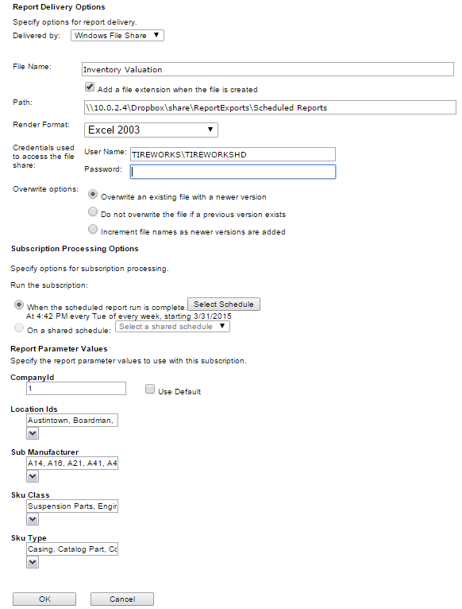

Subscribe to reports
Use a report subscription to schedule a report for delivery by email, to a shared file, or both. You set up each subscription by report.
- Open your web browser and go to your report server's web portal.
- Get the web portal address from your administrator or TCS Support.
- If prompted, sign in with the report account your administrator gave you.
- Select the folder where the report is housed.
- Locate the report you want.
- Select the menu (... or down arrow) to the right of the report name, and then select Subscribe.
- Fill in the Report Delivery Options for email or shared file delivery.
- For shared file delivery, enter the file share path and the user name and password your administrator gives you.
- Enter the schedule for the subscription to run.
- Fill in the report parameter values.
- The parameters depend on the report you selected.
